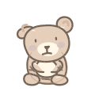
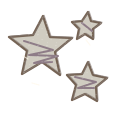
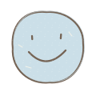
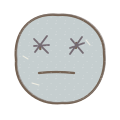
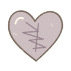
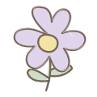
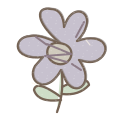

Butu’s crayon box
The same little drawings, left alone a little too long.
I’m still your Butu.
Follow the rounded ears, cream muzzle and little stitched tummy from left to right.

Calm
A little smile. Relaxed paws.

Waiting
A listening tilt. Paws draw close.

Lonely
One ear sags. Still looking at you.

Something’s wrong
Eyes traced over. One mouth corner lifts.

Abandoned
Paws reach out. An uneven smile returns.
Calm is companion artwork. The on-page grace period stays empty.
We drew these together.
Pastel wax, uneven lines. The colour fades; the familiar shape stays.
Stars


Smiley


Heart


Flower


The crayon keeps going.
Three transparent overlays, shown over the same sample paragraph. Each keeps the marks before it.
We saved a little place for you.
The work will still be here.
I will still be here, too.

1. A wandering line
We saved a little place for you.
The work will still be here.
I will still be here, too.

2. A tangled thought
We saved a little place for you.
The work will still be here.
I will still be here, too.

3. Please come back
Check transparency on dark paper